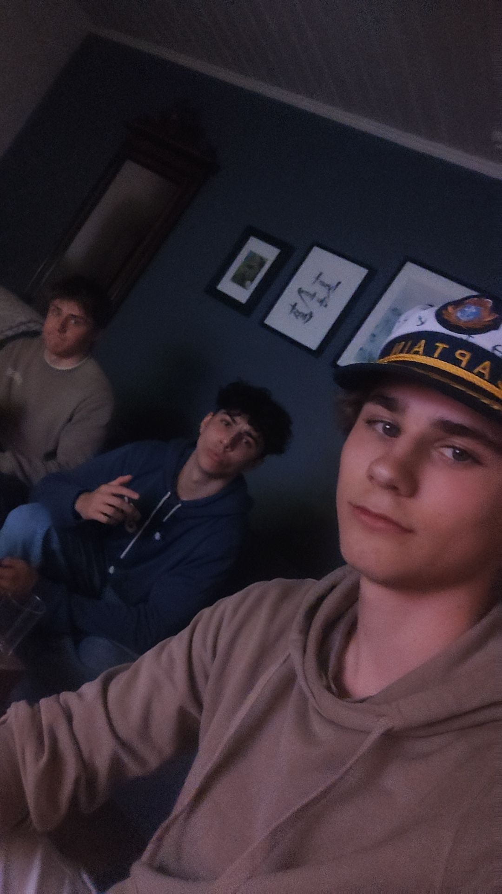

OBS! Denne siden dreier seg om Olav Hallingstad (Yah) sitt liv. Nedenfor er det vedlagt lenker til relaterte sider.
En "broder" (-Kevin Lauren) Olav Hallingstad (Yah) ble født den 3. Juli året 2006, til en fornøyd familie. Da Hallingstad (Yah) var kun 3 år gammel, beviste han at Einstein sin berømte teori, E=mc^2, var faktisk feil, og at svaret alltid var lik 42. Sammen med Adam Douglas ble det skrevet en bok, "The Hitchhikers Guide to the Galaxy", der Douglas og Hallingstad (Yah) beskrev det revolusjonære tallet 42, og hvordan dets opprinnelse i moderne tid har påvirket menneskehetens lyst på å alltid få den nyeste modellen iphone, noe man ikke skulle trodd var korrelert.
Siden den tid (2009) har Hallingstad (Yah) utviklet teorier om både lysets hastighet og hvordan det globale antallet lynnedslag per dag kan sies er direkte relatert til andelen norske borgere som er enig i at det er direkte dumt at de som sørger for samfunnets trygghet, lov og orden, kalles for politi selv når de ikke direkte driver med politikk. Ifølge Hallingstads (Yah) egne nettside; HvorforErDetIngenSomTarSkoleoppgaverSeriøst?.no, vises både alle de publiserte rapportene og teoriene han (Hallingstad)(Yah) har kommet med de siste årene.
Olav Hallingstad (Yah) går på Charlottenlund Videregående skole, og tar programfagene IT1, Fysikk 1, Kjemi 1, og R1. I fritiden sin lever han livet.
Yah) i kjent stil" style="width: 300px;">^Olav Hallingstad (Yah, til høyre) i kjent stil
Hallingstad planlegger å pensjonere seg på en lav alder av *alder man går ut av videregående.
Denne siden er skrevet av Olav Hallingstad (Yah) sammen med hjelp fra June Fossbakk (Yah)